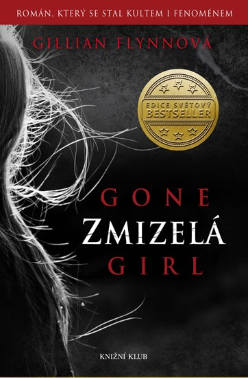

Autor: Gillian Flynn
®ánr: Thriller
Hodnocení: Líbilo se: 1 Nelíbilo se: 0
Zdálo se to jako ideální man¾elství. Zdání ale mù¾e vra¾ednì klamat. Amy Dunnová zmizela v den pátého výroèí svatby. Nick, její mu¾, byl po sérii nalezených dùkazù obvinìn z vra¾dy své ¾eny. Nick prohla¹uje, ¾e nic nespáchal, Amyini pøátelé a zápisky v jejím deníku tvrdí opak. Kdo má pravdu? Jak ji poznat? A pokud je Nick nevinný, kam se podìla Amy?
Zmizelá je skvìlý psychologický thriller, ukázka toho, jak se kriminální ¾ánr dá napsat uvìøitelnì, a pøitom nanejvý¹ napínavì. V poslední dobì se hodnì mluví o skandinávské vlnì, ale stejnì tak by bylo mo¾né mluvit o vlnì mladých autorek, které do trochu zatuchlých vod krimithrilleru pøinesly vítané osvì¾ení.
- iliteratura.cz
Kateøina Foøtová
Jeden z nejpùsobivìj¹ích románù, co jsem èetla. A¾ mi z toho v¹eho naskakuje husí kù¾e. Misky vah se celou dobu knihy tolikrát pøelejí, autorka manipuluje s ètenáøem, umí ¹okovat. Celý pøíbìh kvete jako hoøkosladká kvìtina, nemám prostì slov. Celá ta kní¾ka mi doslova vyrazila dech.